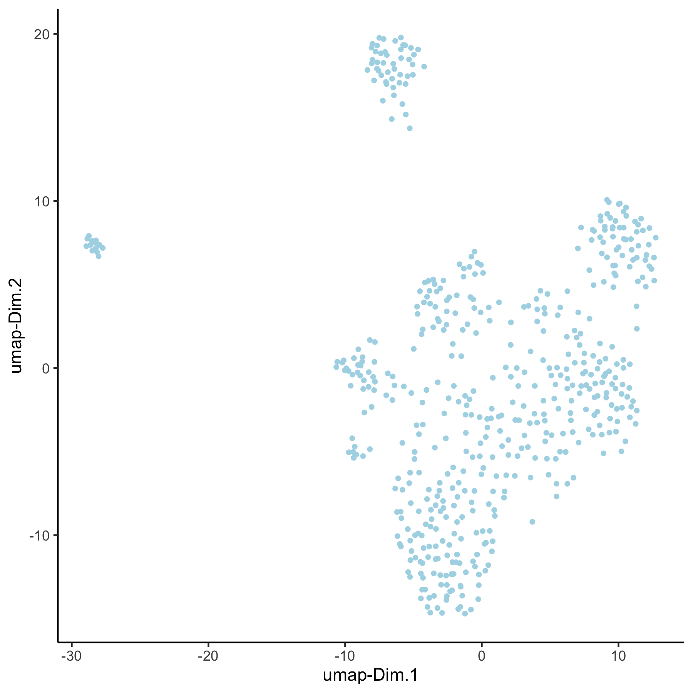
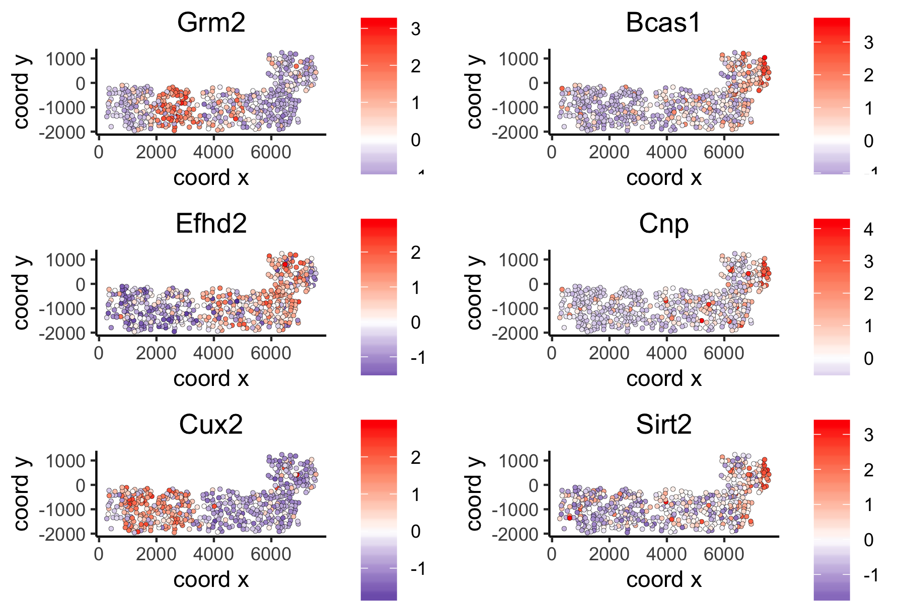

vignettes/work_with_multiple_analyses.Rmd
work_with_multiple_analyses.RmdHow to run and store multiple analyses?
The default Giotto workflow is similar to other scRNA-seq workflows and does not require you to provide a custom name for each analysis (e.g. PCA, UMAP, …), but running an analysis twice will overwrite the previous results with a warning. However, there are situations where being able to run and store multiple analyses can be advantageous:
- test multiple parameters for a single analysis
- test multiple combinations across functions (see example hvg->pca->umap)
- use different output results as input for downstream analyses (see example spatial genes)

We will use the seqFish+ somatosensory cortex as an example dataset after creating and processing a Giotto object.
1. calculate highly variable genes in two different manners
# using the loess method
VC_test <- calculateHVG(gobject = VC_test,
method = 'cov_loess', difference_in_cov = 0.1,
HVGname = 'loess_hvg')
# using the expression groups method
VC_test <- calculateHVG(gobject = VC_test
, method = 'cov_group', zscore_threshold = 1,
HVGname = 'group_hvg')
# compare the highly variable genes between two methods
gene_metadata = fDataDT(VC_test)
mytable = table(loess = gene_metadata$loess_hvg, group = gene_metadata$group_hvg)
2. perform PCA
- using the 2 different HVG sets (loess_genes and group_genes)
- store PCA results using custom names (‘pca_loess’ and ‘pca_group’)
- plot PCA results
## 2. PCA ##
# pca with genes from loess
loess_genes = gene_metadata[loess_hvg == 'yes']$gene_ID
VC_test <- runPCA(gobject = VC_test, genes_to_use = loess_genes, name = 'pca_loess', scale_unit = F)
plotPCA(gobject = VC_test, dim_reduction_name = 'pca_loess')
# pca with genes from group
group_genes = gene_metadata[group_hvg == 'yes']$gene_ID
VC_test <- runPCA(gobject = VC_test, genes_to_use = group_genes, name = 'pca_group', scale_unit = F)
plotPCA(gobject = VC_test, dim_reduction_name = 'pca_group')
3. perform UMAP
- using the 2 different PCA results (‘pca_loess’ and ‘pca_group’)
- store UMAP results using custom names (‘umap_loess’ and ‘umap_group’)
- plot UMAP results
## 3. UMAP ##
VC_test <- runUMAP(VC_test, dim_reduction_to_use = 'pca', dim_reduction_name = 'pca_loess',
name = 'umap_loess', dimensions_to_use = 1:30)
plotUMAP(gobject = VC_test, dim_reduction_name = 'umap_loess')
VC_test <- runUMAP(VC_test, dim_reduction_to_use = 'pca', dim_reduction_name = 'pca_group',
name = 'umap_group', dimensions_to_use = 1:30)
plotUMAP(gobject = VC_test, dim_reduction_name = 'umap_group')
4. Create spatial network
- create spatial with multiple k’s and other parameters (k=5, k=10, k=100 & maximum_distance=200)
- subset field 1
- visualize network on field 1 (‘spatial_network’, ‘large_network’, ‘distance_work’)
## 4. spatial network
VC_test <- createSpatialNetwork(gobject = VC_test, method = 'kNN', k = 5) # standard name: 'spatial_network'
VC_test <- createSpatialNetwork(gobject = VC_test, method = 'kNN', k = 10, name = 'large_network')
VC_test <- createSpatialNetwork(gobject = VC_test, method = 'kNN', k = 100, maximum_distance_knn = 200, minimum_k = 2, name = 'distance_network')
## visualize different spatial networks on first field (~ layer 1)
cell_metadata = pDataDT(VC_test)
field1_ids = cell_metadata[Field_of_View == 0]$cell_ID
subVC_test = subsetGiotto(VC_test, cell_ids = field1_ids)
spatPlot(gobject = subVC_test, show_network = T,
network_color = 'blue', spatial_network_name = 'spatial_network')spatial network:

spatPlot(gobject = subVC_test, show_network = T,
network_color = 'blue', spatial_network_name = 'large_network')large network:

spatPlot(gobject = subVC_test, show_network = T,
network_color = 'blue', spatial_network_name = 'distance_network')distance network:

5. Find spatial genes
- use the different spatial networks as input to identify spatial genes with the rank method
- visualize top spatial genes for 2 methods
## 5. spatial genes
# the provided spatial_network_name can be given to downstream analyses
# spatial genes based on large network
ranktest_large = binSpect(VC_test,
subset_genes = loess_genes,
bin_method = 'rank',
spatial_network_name = 'large_network')
spatGenePlot(VC_test,
expression_values = 'scaled',
genes = ranktest_large$genes[1:6], cow_n_col = 2, point_size = 1,
genes_high_color = 'red', genes_mid_color = 'white', genes_low_color = 'darkblue', midpoint = 0)large network spatial genes:

# spatial genes based on distance network
ranktest_dist = binSpect(VC_test,
subset_genes = loess_genes,
bin_method = 'rank',
spatial_network_name = 'distance_network')
spatGenePlot(VC_test,
expression_values = 'scaled',
genes = ranktest_dist$genes[1:6], cow_n_col = 2, point_size = 1,
genes_high_color = 'red', genes_mid_color = 'white', genes_low_color = 'darkblue', midpoint = 0)distance network spatial genes:
